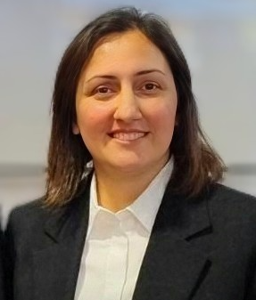

Workshop chairs
 |
|
|---|---|
| Darren Hurley-Smith, University of Kent, UK |
Naghmeh Ivaki University of Coimbra, Portugal |
Technical program committee
Details: TBC
Participation
We aim to bring together academic researchers, engineers, UAV and U-space operators, public authorities, regulators, funders, and people with relevant experience of the effects of urban aviation. The workshop is intended to be technically serious and open to disagreement about what should be built, tested or deployed.